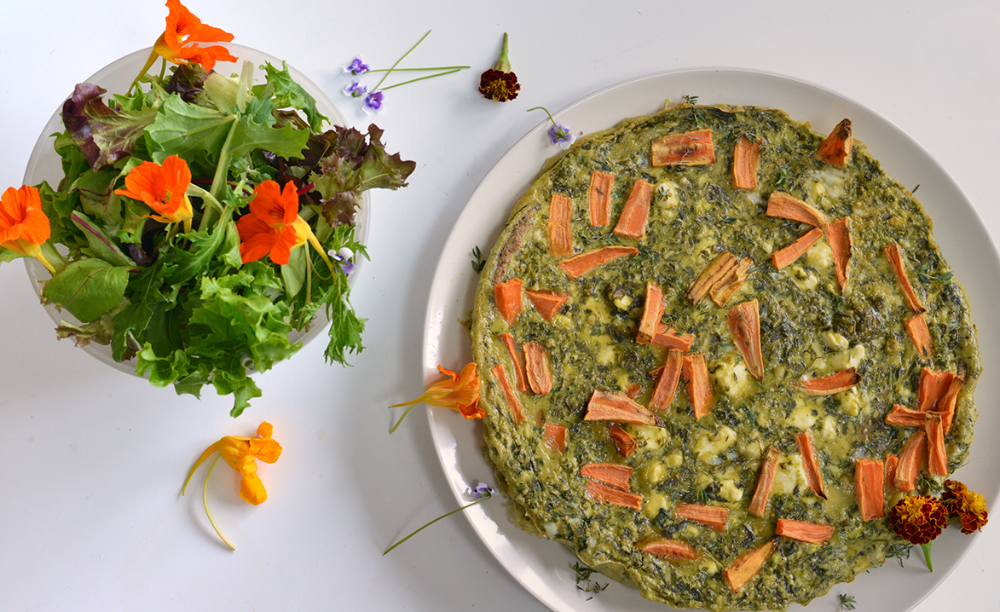

Features - The Boweress
Power Pesto...brought to you by thermomix!
15 January, 2017
I’ve come back for more! More of Alice Gruzman’s awesomeness that is, and on this glorious day we tackled her space age looking thermomix that looks like it could solve all your problems… maybe even not food related if you asked really nice 😉
In between ooohing and ahhing at Estella who dare I say resembles me after a nap, we spoke about the amazing community garden she attained all her ingredients from and how it is really actually not that hard to make something that a. lasts forever and b. you can mix into almost any dish to liven it up a bit.
150g basil
10g parsley
15g mint
75g cashews
25g Parmesan (vegans can substitute this with nutritional yeast OR I find olives a great substitute as they still give a lovely saltiness)
50g olive oil
Juice of half a lemon
Optional: salt, pepper & chilli to taste
Throw it all in to the Thermomix together & whizz for 10 seconds on speed 4. Take off the lid, check consistency & scrape down the sides if necessary. Whizz another 10 seconds if required, no higher than speed 4 as we want to keep the chunky consistency to make it perfect as a dip, to stir through a quiche (or shhhh – to eat out of the jar by the spoonful!).
When you pop it into a jar, top with olive oil to stop it oxidising & going brown on top seeing as we aren’t using any preservatives.
We, well Alice really made this into one of the best quiche I’ve ever had. Looking back over these images it’s funny to see how calm and natural Alice feels in the kitchen even with a baby on her arm whilst I have a series of almost concerned looks 😉 I love to learn and eat so it was really a match made in heaven.
For the domestic goddess in which I am not, this was a game changer. Might have even inspired me to come back for more lessons. A visit to the gardens is definately on the cards where we will chat with Alice’s equally amazing mother. Stay tuned.
And there you have it…kick ass pesto quiche! Salad styled by me…and yes all those flowers are edible!
Â
